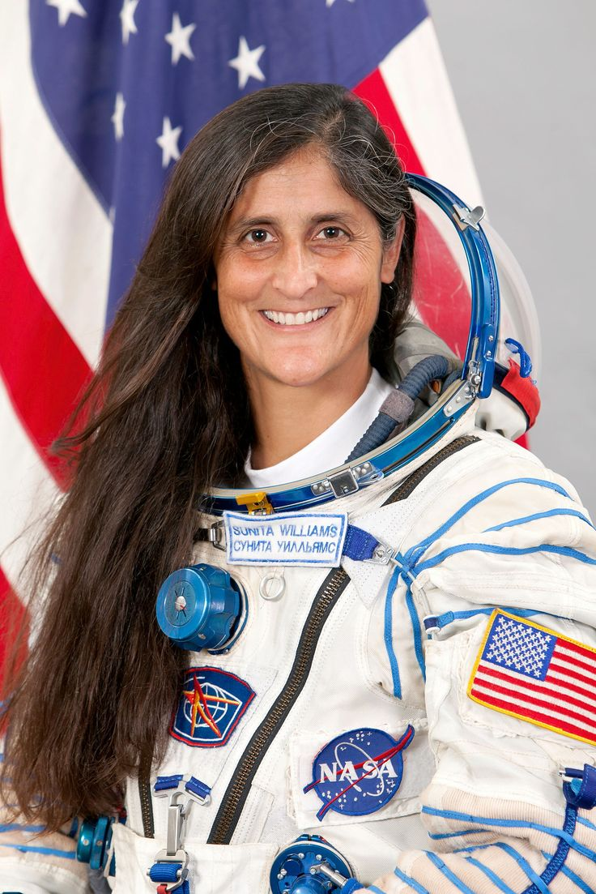

Introduction
Sunita Williams is an Indian-American astronaut and a United States Navy officer.
She is known for her space missions and long-duration stays in space.
Early Life
- Full Name: Sunita Lyn Williams
- Born: 19 September 1965
- Birthplace: Euclid, Ohio, United States
Education
- Studied engineering in the United States
- Trained as a naval officer and pilot
Career
- Became an astronaut at NASA
- First space mission in 2006
- Stayed on the International Space Station (ISS)
Major Achievements
- One of the longest spaceflight durations by a woman
- Performed multiple spacewalks
- Held records for spacewalking time
Challenges
- Faced physical and mental challenges during long space missions
Life Today
- Continues to work with NASA and contribute to space missions
Conclusion
Sunita Williams is an inspiration for her dedication, courage,
and achievements in space exploration.
⬅ Back